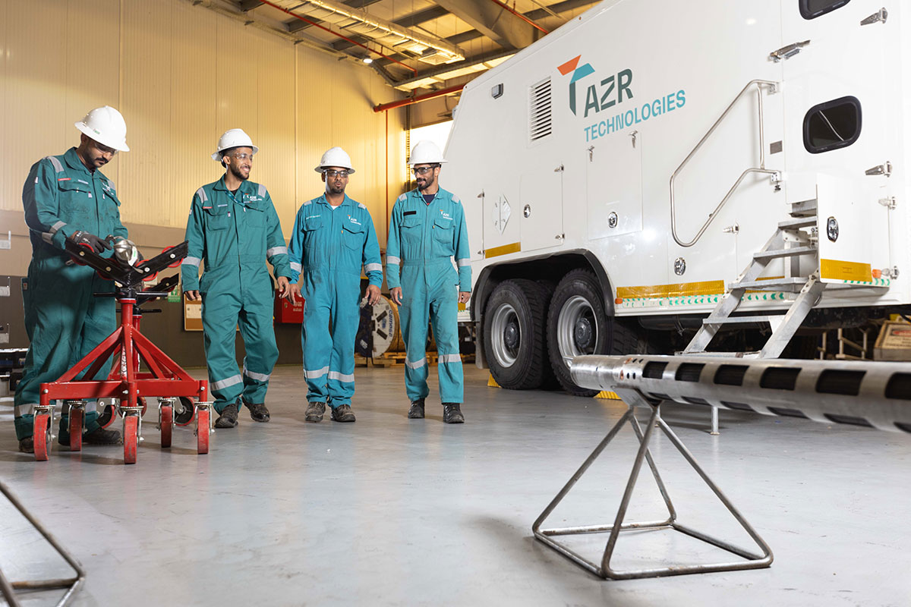

Areas/Operational segment
Inspection
Compliance · Well Inspection Services
Equipment inspection standards, NDT methods, compliance requirements, certification workflows, and audit documentation.
24in force
3active alerts
77days since last issue
TQ · TWS · WISCrew with the AZR Technologies unit

SOP 9WI 4ST 4ALT 3LL 4
Important now
Technical alert · ALT-001 · Rev 1.0Updated API 5CT wall loss rejection criteria, revise all checklistsIssued 13 Dec 2025Technical alert · ALT-002 · Rev 2.0BOP inspection intervals reduced to 14 days in H2S zonesIssued 09 Aug 2025Recently issued4
Standard Operating Procedures9All 9 →
Technical Manuals4
Standards4
Forms & Checklists0
No forms & checklists issued for Inspection yet.
Technical Alerts3
Lessons Learned4
LL-002Incorrect rejection call on tubulars, calibration findingsRev 1.0CurrentLL-004Vendor inspection discrepancy, dual verification implementedRev 2.0CurrentLL-005Crane overload incident, pre-lift checklist improvementsRev 1.0CurrentLL-006NDT equipment drift, calibration frequency doubledRev 2.0Current